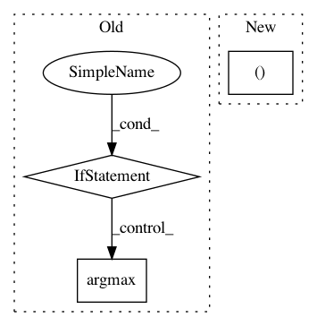

e839626c28d8dc6030ce71f3619e934b36fb6627,catalyst/metrics/functional.py,,get_multiclass_statistics,#Any#Any#Any#Any#,167
Before Change
tensor([1., 1., 0., 1., 1.])
// @TODO: move to process_multiclass_components ?
if outputs.dim() == targets.dim() + 1:
// looks like we have scores/probabilities in our outputs
// let"s convert them to final model predictions
num_classes = max(
outputs.shape[argmax_dim], int(targets.max().detach().item() + 1)
)
outputs = torch.argmax(outputs, dim=argmax_dim)
if num_classes is None:
// as far as we expect the outputs/targets tensors to be int64
// we could find number of classes as max available number
num_classes = max(
After Change
tensor([0., 0., 0., 1., 1.]), tensor([1., 1., 0., 0., 0.]),
tensor([1., 1., 0., 1., 1.])
outputs, targets, num_classes = process_multiclass_components(
outputs=outputs,
targets=targets,
argmax_dim=argmax_dim,
In pattern: SUPERPATTERN
Frequency: 3
Non-data size: 3
Instances
Project Name: catalyst-team/catalyst
Commit Name: e839626c28d8dc6030ce71f3619e934b36fb6627
Time: 2020-10-23
Author: Balaganskij.NN@phystech.edu
File Name: catalyst/metrics/functional.py
Class Name:
Method Name: get_multiclass_statistics
Project Name: chainer/chainercv
Commit Name: a7706fbde22887909db42f96a696437c084c05db
Time: 2017-05-31
Author: Hakuyume@users.noreply.github.com
File Name: chainercv/evaluations/eval_detection_voc.py
Class Name:
Method Name: eval_detection_voc
Project Name: Hironsan/anago
Commit Name: f9af206c5d9a13cb84ccd4116e1a6505e5c02e8a
Time: 2017-07-06
Author: light.tree.1.13@gmail.com
File Name: anago/models/lstm-crf.py
Class Name: NeuralEntityModel
Method Name: report